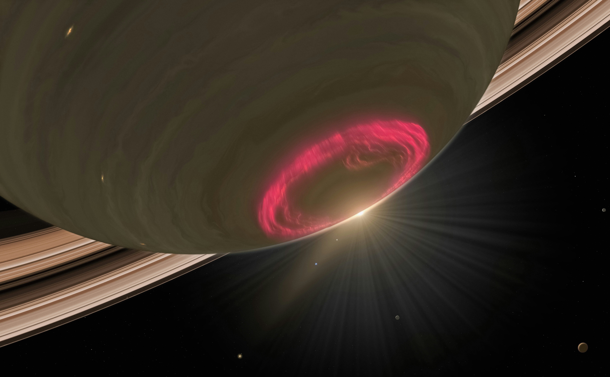
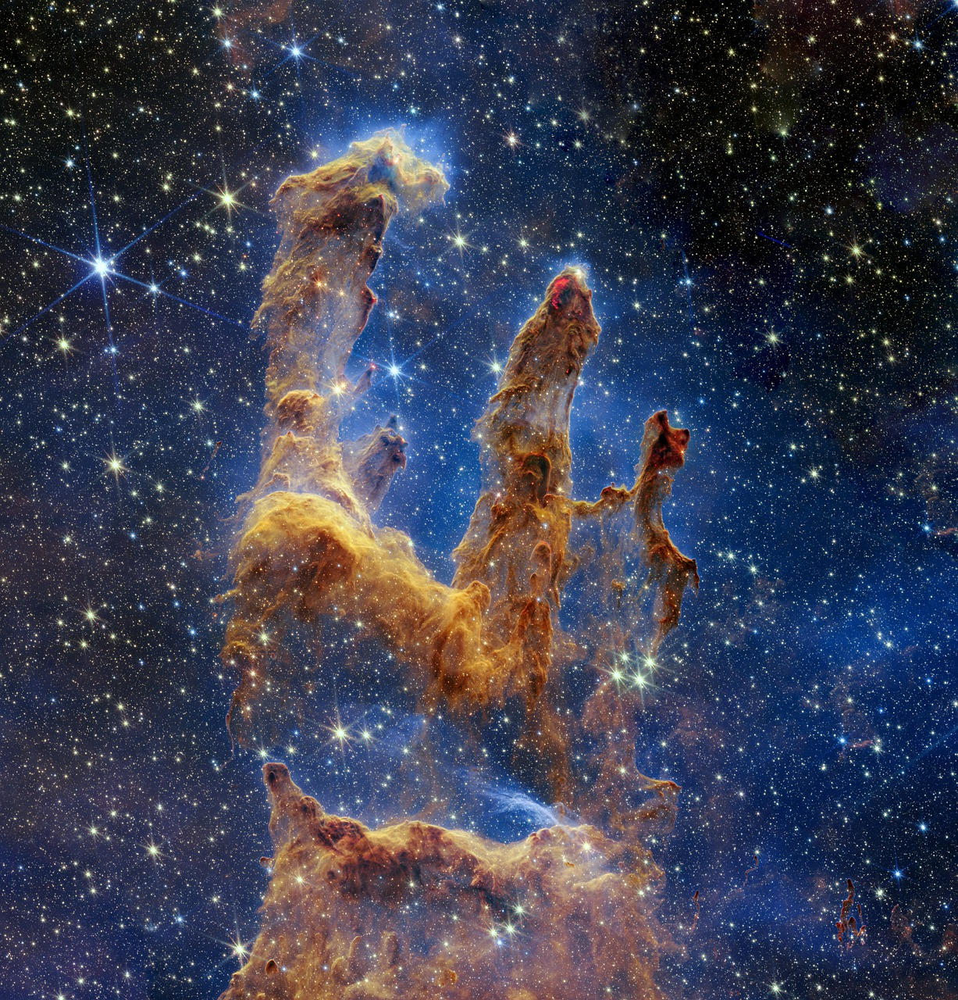
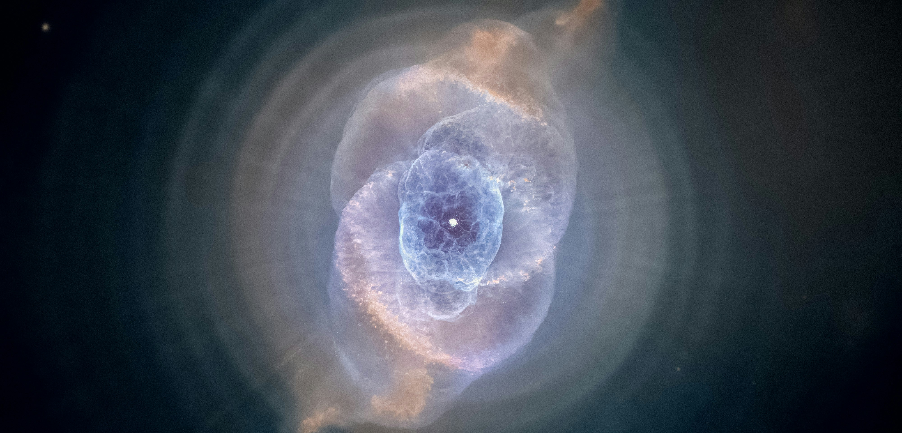

Images Of The Day

A representation of the color of Saturn's aurora if it were to be seen by the naked eye.

A close up image of the heart of the birthplace of stars. Inside the Eagle Nebula exists a breath taking image dubbed the "Pillars of Creation"

The Cat-Eye Nebula showcases intricate patterns of concentric shells of glowing gas that defy simple explanation.

A celestial masterpiece which flutters gracefully in vast outer-space. The Butterfly Nebula's wings glow vibrant colors and intricate patterns.